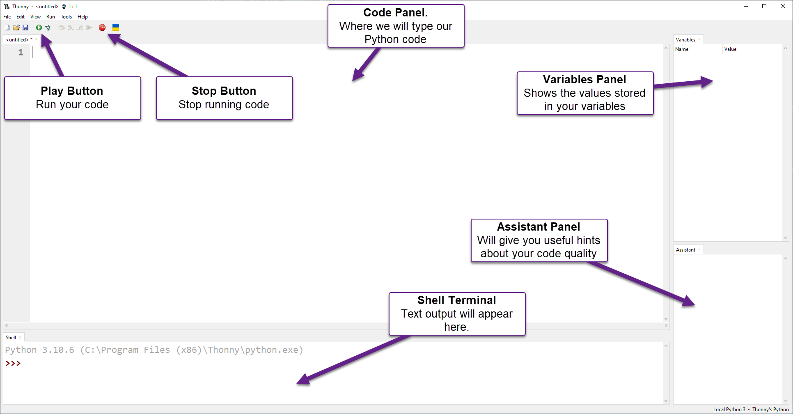

Python Turtle - Lesson 1¶
Part 1: Thonny Introduction¶
What is Thonny¶
Welcome to your first Python Turtle lesson. In this lesson, you will learn how to use Thonny, the program we’ll use to write and run our code. You will also explore some basic Python code and how it is written.
Thonny
We will use Thonny to write our code.
Thonny is a program made for beginners to help you learn Python. It already includes Python, so it’s easy to set up.
You can download it from thonny.org.
Python is the programming language we will use, and Thonny is the program we use to write it.
Think of it like this:
You use Microsoft Word to write English
You use Thonny to write Python
Python programs are written as text files called scripts. You could write them in any basic text editor.
However, programs like Thonny have extra tools that make coding easier, such as:
Colouring different parts of your code so it’s easier to read
Helping you find and fix mistakes
For now, just think of Thonny as a text editor with helpful extras built in.
Setting up Thonny¶
Before we look at Thonny’s screen (called the User Interface or UI), we need to turn on a few settings so everyone’s program looks the same.
The User Interface¶
The image below shows the main parts of Thonny that you need to know for now. We will learn more about it later.

First Program¶
For your first program, you will make a simple program called hello world.
This is the first program most people write when learning to code.
Type the following code into the Code panel:
1# Our First Program
2
3print("Hello World")
PRIMM¶
Throughout this course, you will use the PRIMM process to help you learn.
PRIMM stands for:
Predict – guess what the code will do
Run – run the code and see what happens
Investigate – explore how the code works
Modify – change the code to see what happens
Make – create your own program
This process helps you learn step by step and encourages you to be curious about how code works.
Let’s run through the PRIMM process now
Predict
Before you run the code, you need to predict what will happen.
Have a guess about what you think the code will do before you run it.
Run
Now run the code by clicking the Play button (or press F5 on your keyboard).
Your Shell should now show Hello World.
Did this match what you predicted?
Investigate
Let’s investigate what happened.
First, notice that only Hello World appears in the terminal.
The program skips the first line: # Our First Program. Why?
When a line starts with
#, Python treats it as a commentComments are ignored by the computer
Comments are there to help humans understand the code
Now look at line 3. The word print is in purple.
This shows that
printis a special word in PythonA special word (called a keyword) is like a command that tells the computer what to do
Modify
Now you are going to modify the code and create some errors on purpose. This will help you learn how to read and understand error messages.
Remove the
nfromprintso it saysprit("Hello World")Run the code again and see what happens
You should now see an error message in your Shell:
1Traceback (most recent call last):
2 File "<string>", line 3, in <module>
3NameError: name 'prnt' is not defined
Let’s break down that error message:
Line 1:
Traceback (most recent call last):This means “this is what Python just tried to do.”Line 2:
File "<string>", line 3, in <module>This tells you where the error is. In this case, the mistake is on line 3.Line 3:
NameError: name 'prnt' is not definedThis tells you what went wrong.A
NameErrormeans Python found a word it doesn’t recogniseIt also shows the word it doesn’t understand:
prnt
Go back to line 3 and fix it so it says print("Hello World") again.
Notice that print turns purple again.
Now keep investigating:
Remove the two
"so it saysprint(Hello World)Run the program again
Your Shell will now show a different error:
1Traceback (most recent call last):
2 File "<string>", line 3
3 print(Hello World)
4 ^^^^^^^^^^^
5SyntaxError: invalid syntax. Perhaps you forgot a comma?
Let’s break down this error message:
Line 3: shows the line with the mistake:
print(Hello World)Line 4: the
^symbols point to where the problem is in the lineLine 5:
SyntaxError: invalid syntax. Perhaps you forgot a comma?A
SyntaxErrormeans your code does not follow Python’s rulesPython tries to guess what went wrong, but its suggestion can be incorrect
Change line 3 back to print("Hello World").
Notice how "Hello World" turns green. This is called syntax highlighting.
It shows that Hello World is a type of value called a string.
For now, think of a string as a group of characters (like letters, numbers, or symbols). You will learn more about strings later.
Now continue the investigation:
Remove the
(and)so it saysprint Hello WorldRun the program again
Your Shell will show another error:
1Traceback (most recent call last):
2 File "<string>", line 3
3 print "Hello World"
4 ^^^^^^^^^^^^^^^^^^^
5SyntaxError: Missing parentheses in call to 'print'. Did you mean print(...)?
Let’s break down this error message:
This is a different type of
SyntaxErrorcalledMissing parentheses in call to 'print'Parentheses are the curved brackets
(and)that you removedThis time, Python’s hint is helpful:
Did you mean print(...)?
Next, add back the opening bracket ( so the line now says print("Hello World".
Run the program again and you will see a different error message.
1Traceback (most recent call last):
2 File "<string>", line 3
3 print ("Hello World"
4 ^
5SyntaxError: '(' was never closed
Let’s break down this error message:
The error tells you that you did not close your bracket
In Python, every opening bracket
(must have a matching closing bracket)
Before fixing line 3, look at Thonny:
You should see a grey highlight starting from the
(This shows that the bracket was not closed
This can help you find mistakes before you run your code
Fix line 3 so it says print("Hello World") again.
You have now finished modifying the code and have seen some error messages.
As you keep learning to code, you will see many more error messages. That is normal.
Even experienced programmers get errors. There is a common idea in programming: error messages are your friend. They help you understand what went wrong so you can fix it.
Part 2: Introducing turtle¶
First turtle program¶
Now start your first Turtle program.
Click the New button
Type the code into the new file
Save the file as
lesson_1_pt_1.py
1# Our first turtle program
Python starts with a small set of built-in commands (called functions). It can also use extra groups of commands called modules.
One of these modules is Turtle.
To use a module, you need to tell Python by using the import command.
Always put
importlines at the very top of your program
Your code should look like this:
1# Our first turtle program
2
3import turtle
Create a turtle¶
What is a turtle? A turtle is a small arrow on the screen that you can control and move around.
Before you can use the turtle, you need to create one.
On line 5, type:
my_ttl = turtle.Turtle()
Here’s what that code means:
turtle.Turtle()tells Python:use the turtle module you imported
run the
Turtle()command to create a turtle
my_ttl =gives your turtle a name
You can choose any name you like. The name my_ttl is just an example.
Your name must be one word (no spaces)
If you change the name, you must use that same name everywhere in your code
Your code should now look like this:
1# Our first turtle program
2
3import turtle
4
5my_ttl = turtle.Turtle()
Make your turtle move¶
Now you are going to make the turtle move.
On line 7, type:
my_ttl.forward(100)
This tells the turtle to move forward 100 steps.
Your code should now look like this:
1# Our first turtle program
2
3import turtle
4
5my_ttl = turtle.Turtle()
6
7my_ttl.forward(100)
Predict
You are about to run your first turtle program.
Before you do, predict what you think will happen.
Have a guess about what the turtle will do.
Run
Now run the program and see if it matches your prediction.
You might have guessed that the turtle would move to the right, but did you expect it to leave a line behind it?
Investigate
Just like with Hello World, investigate the code.
Change parts of the code and see what happens.
Modify
Finally, modify the code so the turtle draws lines of different lengths.
Changing the turtle environment¶
Now change the Turtle setup so it looks the same on every computer.
First, make the Turtle window the same size.
Update your code so it matches the example, especially lines 5 and 6:
1# Our first turtle program
2
3import turtle
4
5window = turtle.Screen()
6window.setup(500, 500)
7
8my_ttl = turtle.Turtle()
9
10my_ttl.forward(100)
Let’s look at these changes.
In the turtle module, the window is called a Screen. Line 5 creates a screen, just like you created a turtle:
turtle.Screen()tells Python:use the turtle module
run the
Screen()command to create a screen
window =gives the screen the namewindow
On line 6, this code sets the size of the window:
window.setup(500, 500)makes the window 500 pixels wide and 500 pixels high
What are pixels?
Your screen is made up of lots of tiny dots. If you look very closely, you might be able to see them. These are called pixels.
You might also see screen sizes written like 1920 × 1080. This means:
1,920 pixels wide
1,080 pixels high
You will learn more about pixels later in the course.
Think of pixels as how we measure movement on the screen.
When you write forward(100), it means move forward 100 pixels.
Now you will make another change to how the turtle looks.
Add line 9 from the code below to your program.
1# Our first turtle program
2
3import turtle
4
5window = turtle.Screen()
6window.setup(500, 500)
7
8my_ttl = turtle.Turtle()
9my_ttl.shape("turtle")
10
11my_ttl.forward(100)
Do you want to predict what this change will do?
Run the code and check if your guess was correct.
Change direction¶
Now that your window size is set and your turtle is ready, it’s time to do more drawing.
At the bottom of your code, add these two lines:
my_ttl.left(90)my_ttl.forward(100)
Your code should now look like this:
1# Our first turtle program
2
3import turtle
4
5window = turtle.Screen()
6window.setup(500, 500)
7
8my_ttl = turtle.Turtle()
9my_ttl.shape("turtle")
10
11my_ttl.forward(100)
12my_ttl.left(90)
13my_ttl.forward(100)
Predict
What do you think this code will do?
Be as specific as you can
Draw what you think will happen on a piece of paper
Run
Now run the program and check if it matches your prediction.
Did the turtle draw the same thing as your picture?
Investigate
Try changing the numbers inside the brackets and see what happens.
Exercises¶
In this course, the exercises are the make component of the PRIMM model. So work through the following exercises to make your own code.
Exercise 1
Download the lesson_1_ex_1.py file and save it in your lesson folder.
After line 10, write code that will create a square.
The starting code is shown below:
1## Draw a square with the Turtle ##
2
3import turtle
4
5window = turtle.Screen()
6window.setup(500, 500)
7
8my_ttl = turtle.Turtle()
9
10## Write your code below this line ##
Exercise 2
Download the lesson_1_ex_2.py file and save it in your lesson folder.
After line 10, write code that will create an equlateral triangle.
The starting code is shown below:
1## Draw a Triangle with the Turtle ##
2
3import turtle
4
5window = turtle.Screen()
6window.setup(500, 500)
7
8my_ttl = turtle.Turtle()
9
10## Write your code below this line ##
Exercise 3
Download the lesson_1_ex_3.py file and save it in your lesson folder.
After line 10 write code that will create a hexagon.
The starting code is shown below:
1## Draw a hexagon with the Turtle ##
2
3import turtle
4
5window = turtle.Screen()
6window.setup(500, 500)
7
8my_ttl = turtle.Turtle()
9
10## Write your code below this line ##